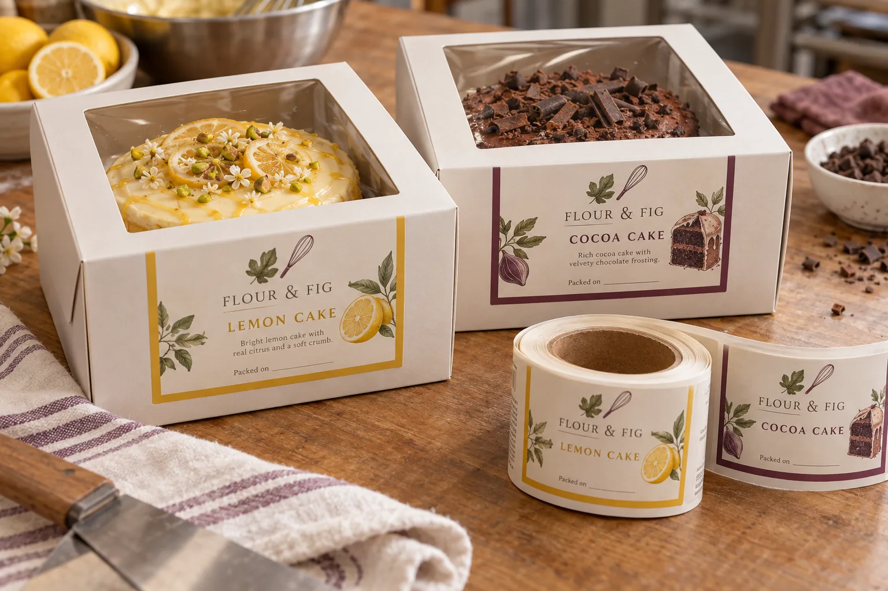

Use the board frame as the label site
A bakery buyer may want a large beautiful label on top of a cake window box. I would put a finished cake inside before deciding. If the sticker covers the lemon glaze or cocoa decoration, the pack loses its most convincing product image. A modest label on a flat paperboard frame or front panel often carries the name more cleanly while the window does the showing.
HERMA's confectionery-labeling overview describes the varied box, tray and film formats used for sweets and cakes and the different top, side and closure-labeling choices. Its food-to-go guide makes the distinction between product labels and labels intentionally designed to close a package. That distinction matters on a cake box.
Two cakes, one window-box family
Imagine a composite bakery packing lemon and cocoa cakes into identical boxes. A common unprinted carton keeps stock simple, while fully designed labels carry the two names and a clear packed-on field. I would check the labels at actual size against the cakes: lemon yellow can disappear against pale icing, while brown artwork can vanish beside a dark cocoa cake. A restrained, opaque panel solves more than a larger sticker.
At a composite wholesale bakery, box size changes for different cake heights. The opening fold and clear-window edge may shift too. If the label lands partly on the fold on the taller box, it can crease when the lid opens. I would request a smaller, shared flat panel or separate die sizes rather than accept that as normal.
Keep identification and closure separate
Decide whether the printed piece is only a product label or also a deliberate opening seal. A front-panel label should not be marketed as tamper evidence. A real seal needs a suitable bridge across the opening, approved adhesive zones and a clear opening behavior. For the decorative label, test surface coating, pressure, daily date printing and scuff during stacking.
| On the finished box | What to check |
|---|---|
| Window | Enough cake remains visible |
| Board panel | Flat, clean label footprint |
| Opening | Fold and finger access stay clear |
| Daily data | Product name and packed-on field match |
| Stacking | Print and corners resist routine scuff |
Our buying view
Let the cake carry the visual weight
I would choose a smaller, consistently placed front label and a clean view through the window. If a box needs an actual closure feature, I would specify a second functional detail rather than hope the brand sticker does it by accident.
Send the packed box
- Finished cakes inside each intended carton size.
- Board coating, window material and fold map.
- Labeling sequence and packed-on coding method.
- Whether a separate opening seal is required.
Read carton corner-seal labels for a functional closure and bakery paper-bag labels for another retail bakery surface.
Frequently asked questions
Should the cake label go on the clear window?
Only if that location, film, visibility and scan needs are deliberately tested. The opaque board panel is often the simpler starting point.
Does a front label seal the cake box?
No. A decorative product label on the front is not a tamper-evident closure unless the package and label are expressly designed and validated for that function.
Can one label fit two box sizes?
Check the smaller box panel, fold positions, window opening and the view of the finished cake before approving one dieline.
Related buyer guides
Review your label specification
Send package photos, label dimensions, material details, quantity and application conditions. Include good and failed samples where possible so the discussion starts with evidence.